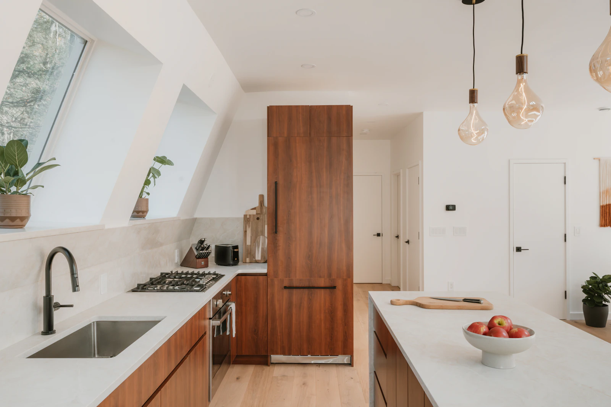
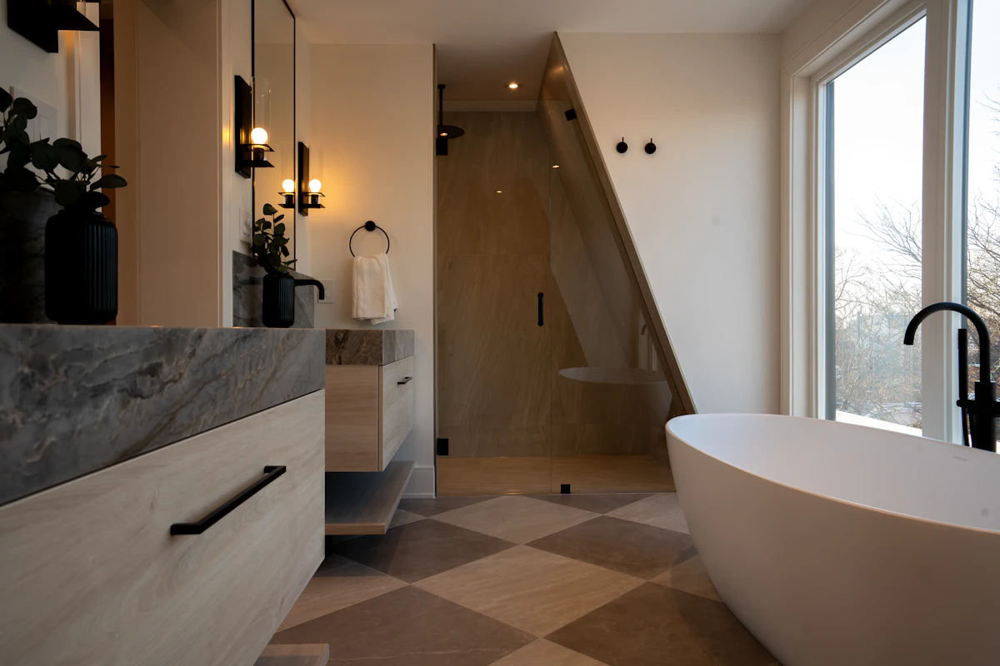
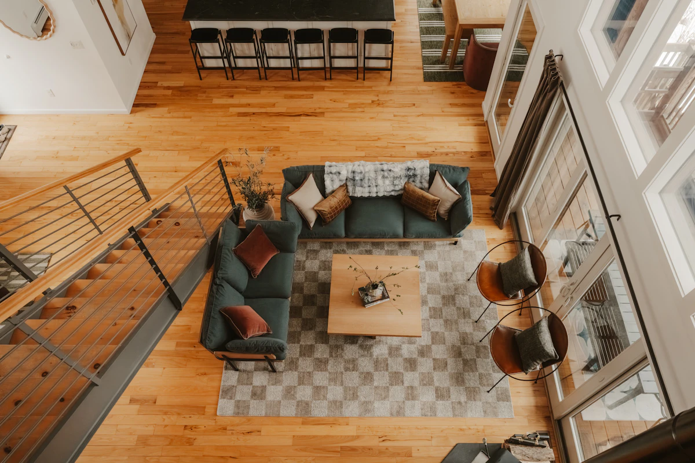
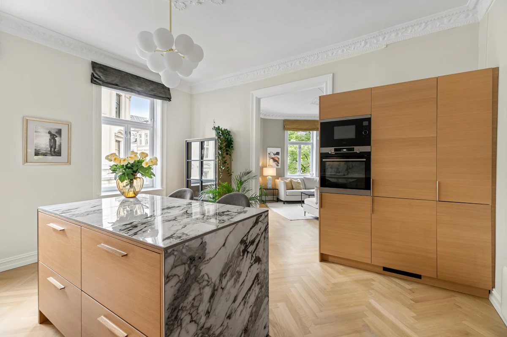

RENOVATION SERVICES
Thoughtful improvements.
Everyday possibilities.
Explore four ways to make your home work better. Each project starts with understanding the space and your priorities.

01 / KITCHEN REMODELING
The heart of home, reimagined.
Cabinet updates, thoughtful layouts, new countertops and layered lighting—made for the way you cook, gather and live.
- Storage that works harder
- A layout that feels natural
- Finishes with lasting appeal

02 / BATHROOM RENOVATION
A little calm in your everyday.
Modern showers, considered tilework, beautiful vanities and updated fixtures turn everyday routines into something special.
- Practical, easy-care surfaces
- Considered lighting and fixtures
- A cohesive, relaxing space

03 / FLOORING INSTALLATION
A beautiful foundation.
Explore hardwood, luxury vinyl and tile, with room-by-room material choices and a coordinated installation plan.
- Materials suited to your lifestyle
- A consistent look across rooms
- Thoughtful transitions and details

04 / WHOLE-HOME RENOVATION
Bring the whole vision together.
Coordinated improvements across multiple rooms, with a clear scope, connected design decisions and a practical project sequence.
- One cohesive design direction
- Coordinated project planning
- Spaces that work better together
GOOD QUESTIONS. CLEAR ANSWERS.
Before we begin.
Where do you work?
The proposed service area is Austin and surrounding communities. Confirm your address and project scope when requesting an estimate.
What should I include in my estimate request?
Tell us the room or rooms involved, the changes you have in mind, your approximate budget and preferred start date. Photos can be discussed during the follow-up.
How long does a renovation take?
Timing depends on the scope, material availability, approvals and site conditions. A project-specific schedule should be agreed before work begins.
Can I live at home during the renovation?
That depends on the work involved and access to essential rooms. Discuss dust control, working hours and temporary arrangements during planning.
YOUR NEXT CHAPTER STARTS AT HOME
Let’s make room
for something beautiful.
Tell us about your space. We’ll start with your ideas.